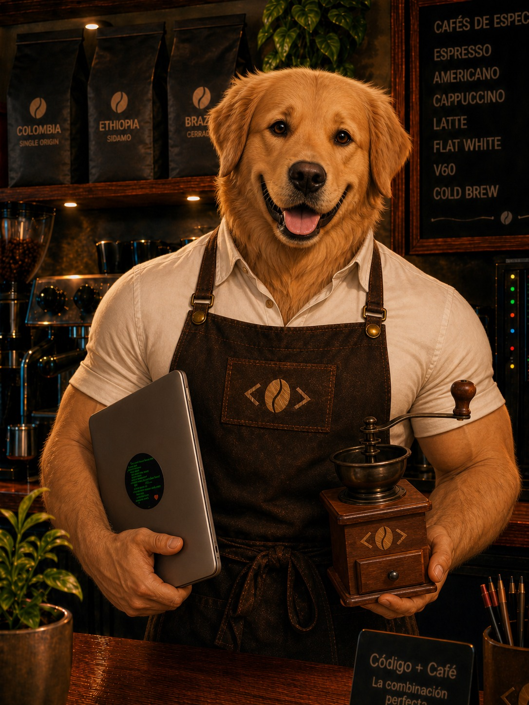

Dany
DevOps Supply Chain Manager
Edad: 21 ( + 16 )
Sucursal de Origen: Córdoba
flujos de café y códigos...
deploys activos...
Mi receta se basa en mantener la barra en funcionamiento: código ordenado, despliegues cuidados y un flujo constante para que el proyecto no se detenga. Como en una cafetería bien organizada, cada paso debe llegar a tiempo y sin cortar el servicio.
Me gusta pensar el proyecto como una cafetería en pleno movimiento: para que cada pedido salga bien, no pueden faltar granos, leche, vasos, agua ni una máquina funcionando. En el mundo del código pasa algo parecido: el equipo necesita archivos ordenados, versiones cuidadas, un repo claro y un camino seguro para publicar el sitio.
🎬 FILMS_LOG
- ☕ Hombres de Negro 3 (2012) 🐾
- ☕ Marley y Yo (2008) 🐾
- ☕ Hachiko (2009) 🐾
- ☕ John Wick (2014) 🐾
💿 DISCS_DRIVE
- ☕ Animals - Pink Floyd 🎸
- ☕ Abbey Road - The Beatles 🎸
- ☕ Pet Sounds - The Beach Boys 🎸
- ☕ Nevermind - Nirvana 🎸